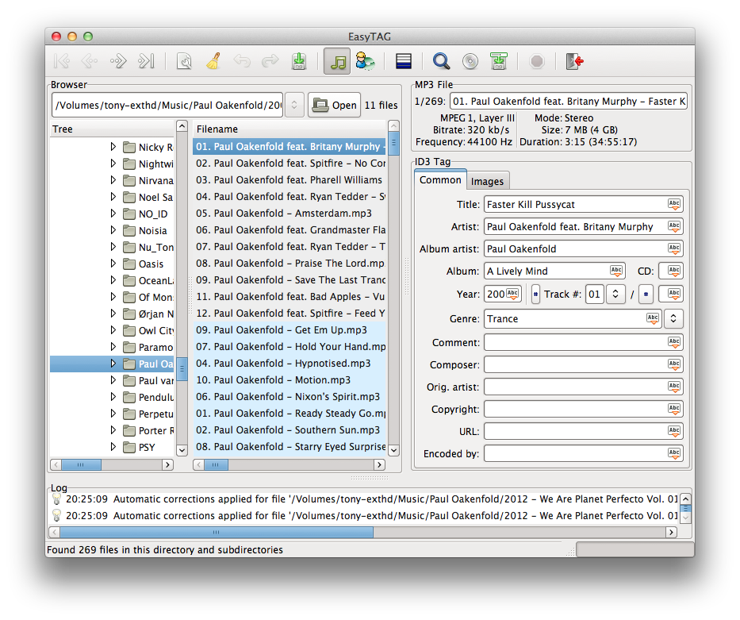

EasyTAG is a utility for viewing and editing tags for MP3, MP2, MP4/AAC, FLAC, Ogg Vorbis, MusePack, Monkey's Audio and WavPack files. Its simple and nice GTK+ interface makes tagging easier under Linux or Windows.
This project is an effort to bring EasyTAG to OS X without requiring the use of an X server.
By using this build, you agree not to hold me responsible if your laundry is eaten. This is not an official build.
Latest: v2.1.8-mac-alpha-1
If you find any bugs in this release, please file a bug report on the issue tracker.

I would like to thank the EasyTAG developers for their work in creating EasyTAG, and also Marco Schuh for his independent porting efforts.